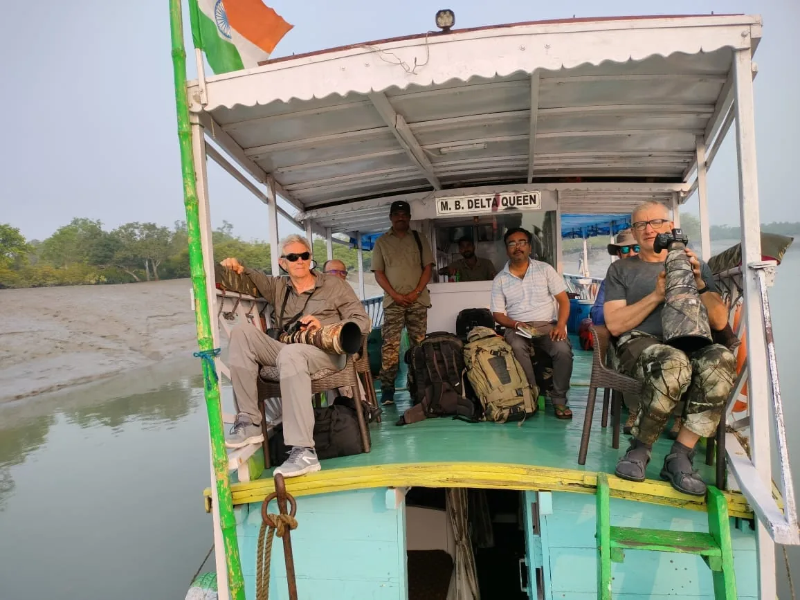

BIRDING & FIELD OBSERVATION
Guided Birding Safaris
Explore mangrove habitats and look for kingfishers, raptors, shorebirds and seasonal visitors.
Explore Birding ↗Every traveller sees the mangroves differently. Start with the experience that draws you in, then shape a journey around your interests, pace and curiosity.
Explore Experiences ↓From bird-rich creeks and tidal river journeys to wildlife tracking, photography, nature stays and private itineraries, our experiences are built around exploring the Sundarbans with attention and respect.
Explore mangrove habitats and look for kingfishers, raptors, shorebirds and seasonal visitors.
Explore Birding ↗
Experience tidal waterways, changing landscapes and quiet stretches of the mangrove river system.
Cruise the Waterways ↗
Slow down, stay near the countryside and enjoy a nature-first setting outside the forest.
Discover Your Stay ↗
Explore habitats, look for field signs and learn about the ecology of this complex wilderness.
Enter the Wilderness ↗
Plan time for wildlife, birdlife, landscapes, river scenes and the changing light of the mangroves.
Explore Photo Expeditions ↗
Choose a slower river journey, intentional screen-free hours and mindful moments surrounded by the mangrove landscape.
Discover NirvaanAfloat ↗
Explore the Sundarbans aboard our wildlife-ready houseboats, a floating base for naturalists, wildlife explorers and photographers.
Explore DELTA QUEEN ↗Tell us what you want to experience. We can help you plan a practical Sundarbans journey.
Plan Your Expedition ↗